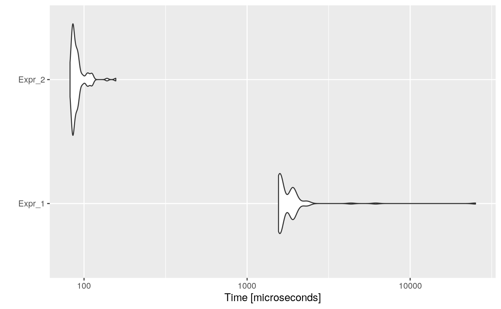

Dead Store Elimination is an optimization that intends to remove a local variable that is assigned a value but is not read by any subsequent instruction.
For instance, consider the following code:
Variable i is never used, so this assignation could be removed, resulting in:
After applying other optimizations, such as Constant Propagation, some variables become dead stores.
For example, consider:
foo <- function(x) {
i <- 0
n <- 8818
res <- 0
while (i < n) {
res <- res + i
i <- i + 1
}
return(res)
}After Constant Propagation would return:
foo <- function(x) {
i <- 0
n <- 8818
res <- 0
while (i < 8818) {
res <- res + i
i <- i + 1
}
return(res)
}And thus, n would become a dead store.
Consider the following (useless) example:
code <- paste(
"foo <- function(n) {",
" i <- 0",
" res <- 0",
" while (i < n) {",
" res <- res + i",
" i <- i + 1",
" a <- i + 1",
" }",
" res",
"}",
"foo(10000)",
sep = "\n"
)
cat(code)## foo <- function(n) {
## i <- 0
## res <- 0
## while (i < n) {
## res <- res + i
## i <- i + 1
## a <- i + 1
## }
## res
## }
## foo(10000)Then, the automatically optimized code would be:
## foo <- function(n) {
## i <- 0
## res <- 0
## while (i < n) {
## res <- res + i
## i <- i + 1
## i + 1
## }
## res
## }
## foo(10000)And if we measure the execution time of each one, and the speed-up:
bmark_res <- microbenchmark({
eval(parse(text = code))
}, {
eval(parse(text = opt_code))
})
autoplot(bmark_res)
## Min. 1st Qu. Median Mean 3rd Qu. Max.
## Expr_2 19.98002 20.14812 20.08643 23.7259 21.84584 157.0469A dead store will be an assignment of a variable that is not read by any subsequent instruction. To be considered dead store, the assignment must be given within the definition of a function, since otherwise, the assignment would affect the global environment and therefore could be aimed to be used by the user.
The opt_dead_store detects which code chunks are function definitions. Then for each function, the optimizer gets it expression, detects dead stores, i.e., assigned but not read variables, and eliminates them.
Intelligent dead store?
If within a function, a variable is assigned multiple times, but just the last assignation is read, then the optimizer could keep just the last one.
For example:
Would be equivalent to:
Remove variables that do not affect the returned value?
Eliminate all those variables that are assigned, read or not, but that do not affect the value returned by the function.
For example:
foo <- function() {
a <- 8818
b <- 0
c <- 1000
res <- 0
for (b < c) {
b <- b + 1
res <- res + b
}
return(a ^ 2)
}Would be equivalent to: